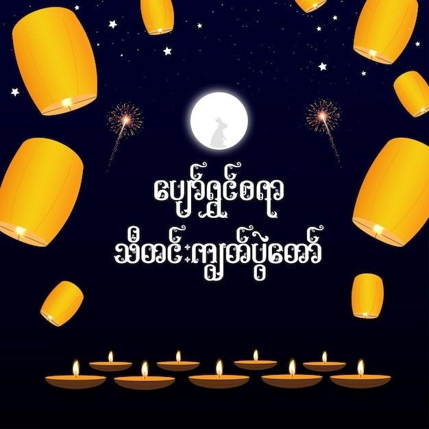
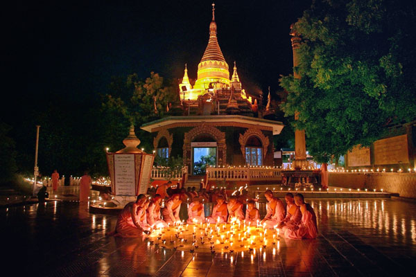

The Festival of Lights in Myanmar
The Thadingyut Festival, or Festival of Lights, is an important annual Buddhist celebration in Myanmar. It marks the end of the three-month Buddhist Lent, a period when weddings and festivals are classically taboo. The festival takes place on the full moon of the Thadingyut lunar month and celebrates the Buddha's return from heaven.
Thadingyut Full Moon Day 2025: Monday, 6th October 2025
It is a significant Myanmar public holiday that commemorates the end of Buddhist Lent and the Buddha's return from his mother's heavenly abode. Homes and streets are decorated with lanterns and candles to welcome the Buddha and show gratitude to elders.
The Lighting Festival, known as Thadingyut, celebrates the conclusion of the Buddhist Lent and the Buddha's return from heaven. In 2025, people in Myanmar will enjoy five days off for the festival, with celebrations happening nationwide.
The celebration lasts for three days: the day before the full moon day, the full moon day itself, and the day after.
